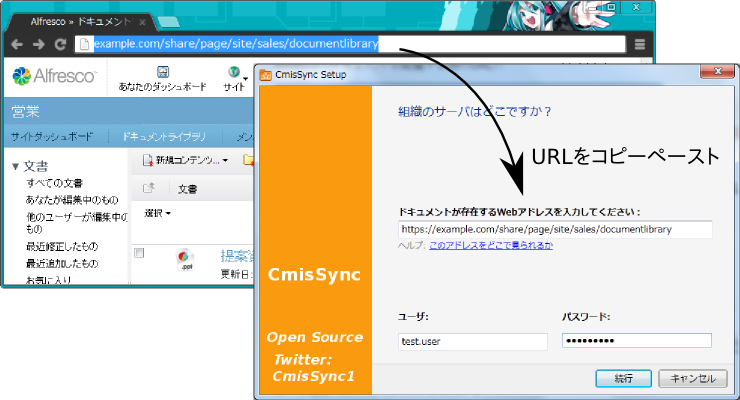

CmisSync を使うと、あなたのPCと社内 Alfresco を簡単に同期できます。
オフラインでも、ドキュメントの閲覧と編集を行えます。
ステップ1
まず .NET Framework、次に CmisSync をインストールしましょう。
ステップ2
CmisSync を実行してください。
チュートリアル画面が終わると、タスクトレイに CmisSync のアイコンが追加されます。
アイコンを右クリックして、「リモートフォルダを追加...」を選択します。
ステップ3
表示された画面の「URL」フィールドに、Alfresco サーバの URL を入力します（ブラウザで Alfresco のドキュメントを閲覧する為のURL）：

プロトコル（ http:// か https:// ）も必要です。
ユーザ名とパスワードも入力してください。
ステップ4
「次」を押すと、Alfrescoのフォルダのリストが表示されます。
同期したいフォルダを選択してください。
とくにAlfresco Share の場合は「Sites」をクリックして、同期したい Site を選び、その「documentLibrary」を選択してください。
設定はこれで終了です。
CmisSync はすぐに Alfresco とあなたのPCとの同期を開始します。
CmisSync はファイルの編集・追加を双方向で行えます。
もしもファイルの変更が衝突した場合、警告が表示されます。衝突した2つのファイルはバックアップされている為、後でマージすることも可能です。